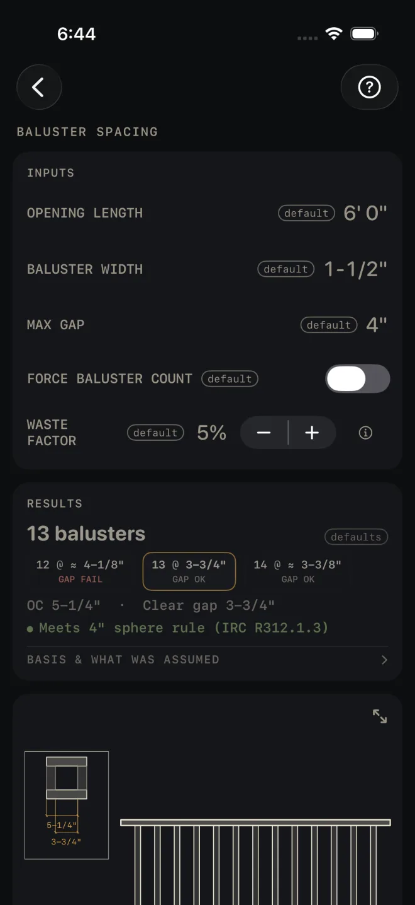
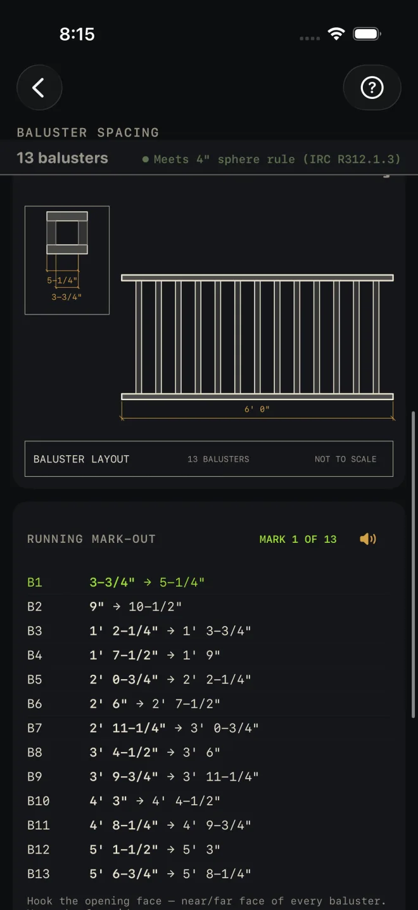
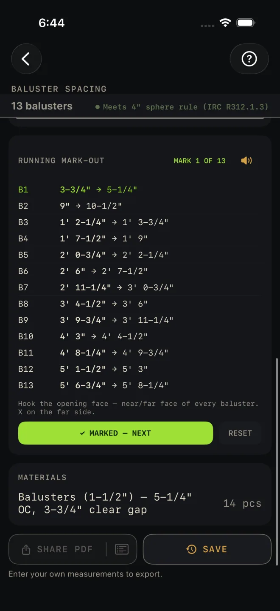

Baluster Spacing
What it's for
You have a rail opening between two posts and need the balusters evenly spaced with every gap the same. Baluster Spacing gives you the count, the on-center spacing, the clear gap, a running mark-out to lay the rail out from one hook of the tape, and the number to buy. It checks the gap against the 4" sphere rule and says so in green or red.
Step by step
The example is the screen as it opens: a 6' 0" opening, 1-1/2" balusters, 4" maximum gap.

1 2 3 4 6- OPENING LENGTH — the clear distance between the two posts, face to face, along the rail. Not center to center. The example is 6' 0".
- BALUSTER WIDTH — the actual width of one baluster along the rail. Put a tape on it. The example is 1-1/2".
- MAX GAP — the widest clear gap you will accept between balusters, and between a baluster and a post. It opens at 4", the figure the check on this screen is named for.
- FORCE BALUSTER COUNT — leave it off and the calculator picks the fewest balusters that keep every gap within MAX GAP. Turn it on and a COUNT row appears, starting at the calculated count, for you to set your own.
- WASTE FACTOR — extra balusters to buy, in steps of 5%. The example is 5%.
- Read RESULTS: 13 balusters. The three chips under it are one fewer, the current count and one more, each with its gap: 12 @ ≈ 4-1/8" GAP FAIL, 13 @ 3-3/4" GAP OK, 14 @ ≈ 3-3/8" GAP OK. Tap a chip to use that count. It switches FORCE BALUSTER COUNT on for you.
- The next line is the layout: OC 5-1/4" · Clear gap 3-3/4". The green line under it is the check.
- Scroll down to the drawing and compare it with the rail in front of you.
- Use RUNNING MARK-OUT to lay out the rail. Hook the tape on the face of the post at the start of the opening. Each row is the near and far face of one baluster from that hook: B1 is 3-3/4" → 5-1/4". Mark both, put an X on the far side, tap MARKED — NEXT and go on to B2.
- Read MATERIALS for the order: 14 pcs in the example, 13 plus waste.

8 9
9 10Reading the results
The headline is the number of balusters in the opening. defaults beside it means you have not entered your own numbers yet.
The chips let you trade count against gap. A chip marked ≈ has a gap that does not land on a sixteenth. A chip reading GAP FAIL has a gap wider than MAX GAP, or no gap left at all. A chip past the COUNT row's range of 0 to 200 is dimmed and does nothing when tapped.
OC is center to center of the balusters. Clear gap is the open space between them, and it is the same at both posts.
The check. Green reads Meets 4" sphere rule (IRC R312.1.3). Red reads FAILS 4" SPHERE RULE — GAP … EXCEEDS … MAX (IRC R312.1.3), with your gap and your MAX GAP filled in. The sphere-rule name is used only while MAX GAP is 4". At any other maximum the line names the gap and the maximum it was checked against instead: green Gap … within … max (IRC R312.1.3), red GAP … EXCEEDS … MAX (IRC R312.1.3). The fix is more balusters: tap the chip with one more, or raise COUNT. A wider BALUSTER WIDTH closes the gap too. The check also goes red when a forced count is more than the opening can hold.
BASIS & WHAT WAS ASSUMED — tap it to open. It says the layout is for level rail runs and that stair guards follow a different convention, names the code edition the check comes from, and tells you to verify local amendments with your building department. Your local code and your inspector govern.
The drawing is the rail in elevation with the opening dimensioned, and a boxed detail of one baluster with the on-center and gap dimensions. Pinch to zoom, drag to move around, double-tap to reset, or tap the expand button at its top right for the whole screen. See Reading the drawing.
RUNNING MARK-OUT keeps your place as you mark, and the speaker button reads the marks aloud. RESET asks you to confirm, then goes back to the first mark. See Mark-out and speak.
MATERIALS is one row: the balusters at your width, with the spacing and gap in the name, and the quantity to buy with waste added and rounded up.
The buttons wait for your own numbers: the export button and the list icon in it stay dimmed, and SAVE tells you to enter them first. After that SHARE PDF shares the drawing, inputs and materials as a PDF, the list icon at the right end of the same button shares the material list alone, and SAVE puts the result in History.
Common mistakes
- Measuring post center to post center. OPENING LENGTH is the clear opening, post face to post face. The mark-out hooks on that face.
- Entering the nominal baluster size. A 2x2 is not 2" wide. Every gap is worked from BALUSTER WIDTH, so measure one.
- Raising MAX GAP to make the red line go away. The check compares your gap with whatever MAX GAP says, so a bigger number there passes a bigger gap. Leave it at 4" unless you want it tighter.
- Using the level-rail layout on a stair guard. The basis row says this screen lays out level runs.
Related
- Deck and Stairs — where the rail goes
- Fence — post layout with the same mark-out card
- Mark-out and speak
- Equal parts — even spacing on the keypad
- Reading the drawing
- Saving and History